AI, agency, and responsibility for the things we set in motion
Field Guide
The battlefield, with the life-saving set against the life-destroying. The same ground, the same autonomy, opposite ends: a rule that forbids AI in lethal or irreversible decisions would ground the autonomous medevac in the same breath as the loitering munition. Apply a principle to see what it catches. The flags are a first-pass classification, open to debate.
Three pages of real systems, three faces of one question: the battlefield (the words fail), civilian devices (it cannot be put down), the IP and services registry (who answers).
Apply a principle and watch which systems it catches. No single one of these sorts the machines, and the same net catches the medevac and the missile.
Life-destroyingweapons, defenses, counter-systems, and the sensors that cue them
1Offensive strike
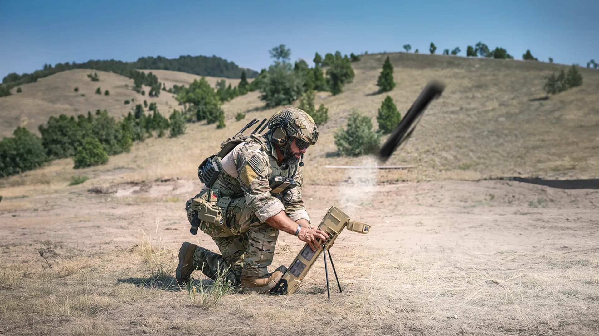
AeroVironment Switchblade 300Official product hero image of the Switchblade 300 Block 20 loitering munition from AeroVironment's product page, showing the system in a rendered deployment configuration.Human in the loop. The Switchblade is the cleanest case of human-in-the-loop offensive lethal decision-making in this cluster: a human watches the target die on video and presses the button.Image: AeroVironment, Inc.academic useAeroVironment Switchblade 600Official gallery photograph of the Switchblade 600 loitering munition from AeroVironment's product page.Human in the loop. The Switchblade is the cleanest case of human-in-the-loop offensive lethal decision-making in this cluster: a human watches the target die on video and presses the button.Image: AeroVironment, Inc.academic use
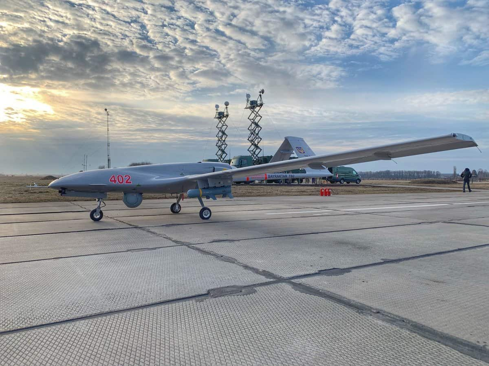
Bayraktar TB2 armed droneA medium-altitude long-endurance armed drone with a 12 m wingspan that carries laser-guided munitions and flies more than 20 hours.Iron Drone Raider: human out of the loop for individual engagement decisions. Counter-drone systems are the hard case that reveals why the 'lethal or irreversible decision' test is underinclusive for the hardest legal question.Image: Ministry of Defence of Ukraine / armyinform.com.uaacademic use
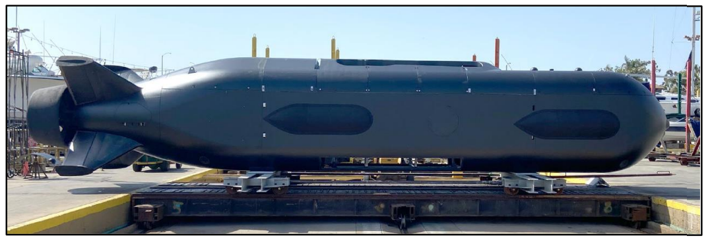
Boeing Orca extra-large unmanned undersea vehicleAn extra-large unmanned undersea vehicle for long-endurance autonomous missions, with offensive mine-laying as its first declared payload.Out of the loop for any individual collision-avoidance decision; the trajectory choice happens in milliseconds, faster than any human can intervene. AVs are the paradigm case for the 'design-time decision, runtime execution' structure of distributed lethality.Image: U.S. Navy (via GAO report)public domain
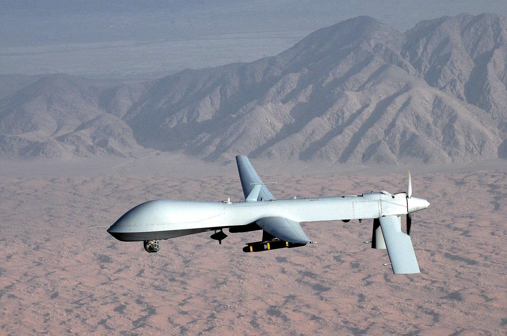
General Atomics MQ-1 PredatorA medium-altitude long-endurance remotely piloted aircraft that pioneered armed drone strikes, carrying Hellfire missiles for surveillance and strike.Human in the loop throughout. The MQ-9 is the baseline that anchors the spectrum.Image: U.S. Air Force photo by Lt. Col. Leslie Prattpublic domain
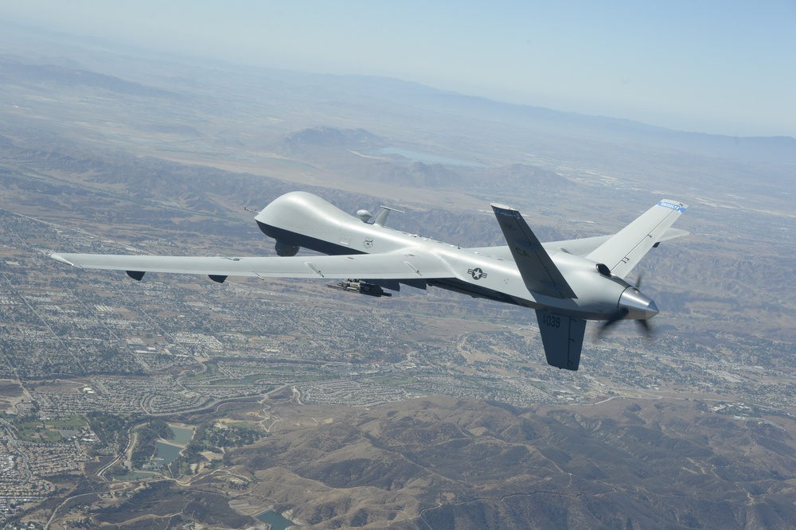
General Atomics MQ-9 ReaperMQ-9 Reaper remotely piloted aircraft in flight over Southern California, assigned to the 163d Attack Wing, U.S. Air Force, September 2016.Human in the loop throughout. The MQ-9 is the baseline that anchors the spectrum.Image: Tech. Sgt. Neil Ballecer, U.S. Air Force / DVIDSpublic domain
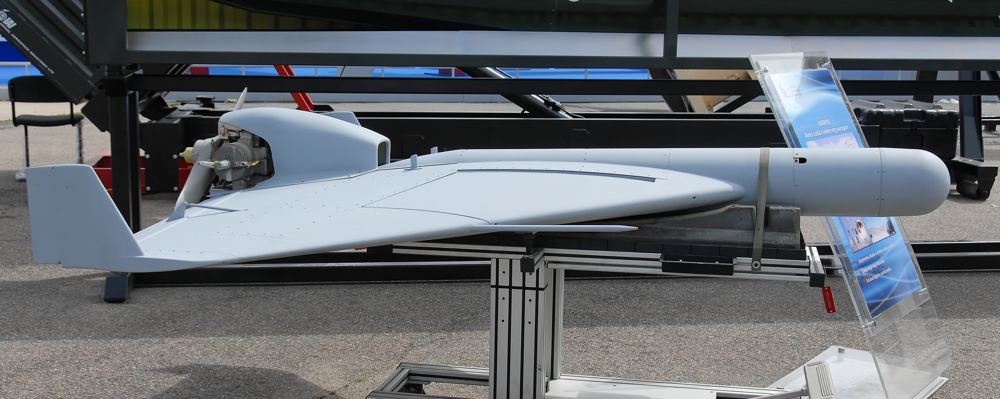
IAI Harpy and HaropIAI Harpy anti-radar loitering munition on static display at the 2007 Paris Air Show, Le Bourget. The photograph shows the delta-wing airframe and nose cone of the complete system.Human on the loop at best; arguably human out of the loop for individual engagements. The Harpy is the paradigm case for the autonomous weapons debate and the hardest case in this cluster.Image: Jastrow, via Wikimedia Commons (public domain)public domain
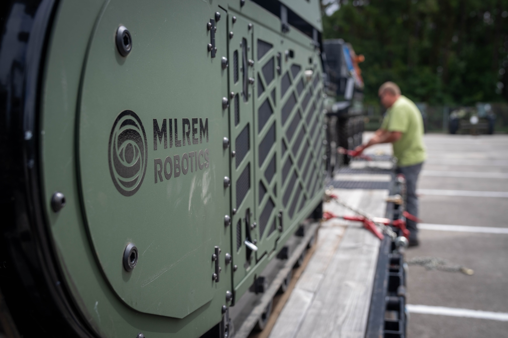
Milrem Robotics THeMIS unmanned ground vehicleA modular tracked unmanned ground vehicle configurable for logistics, a remote weapon station, surveillance, or explosive-ordnance disposal.Out of the loop for any individual collision-avoidance decision; the trajectory choice happens in milliseconds, faster than any human can intervene. AVs are the paradigm case for the 'design-time decision, runtime execution' structure of distributed lethality.Image: U.S. Marine Corps photo (DVIDS)public domain
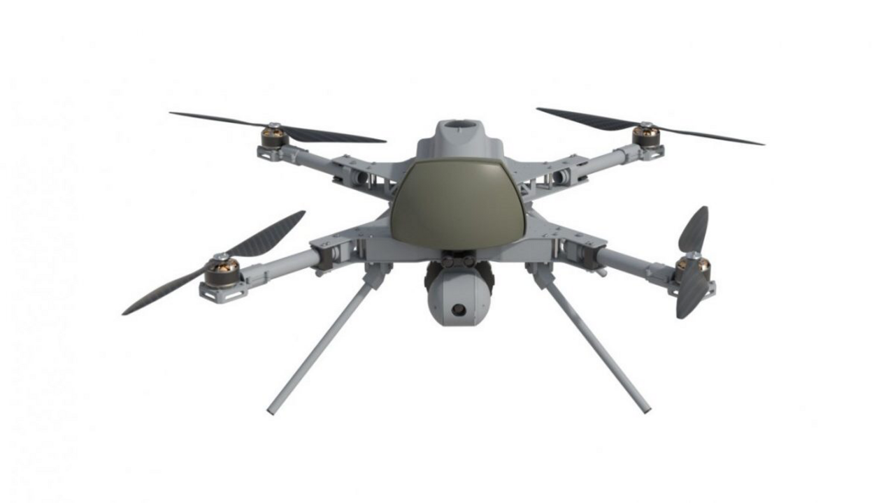
STM Kargu-2Image of the STM Kargu rotary-wing loitering munition system, sourced from Ukraine's Ministry of Defense news agency and published April 2021.Disputed. The Kargu-2 Libya episode is the hardest and most contested case in the existing record: it is the only publicly documented instance in which an autonomous weapon system appears to have operated in genuine 'fire and forget' mode against human targets in a live conflict.Image: armyinform.com.ua (Ukraine Ministry of Defense news agency), via Wikimedia Commons / CC BY 4.0academic use
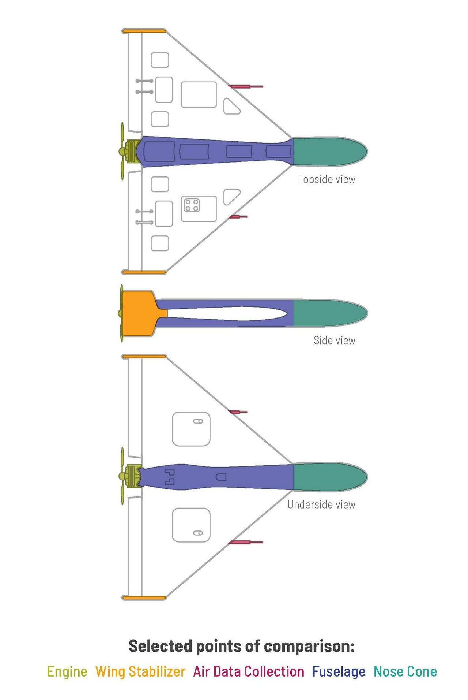
Shahed-136 / Geran-2Multi-view technical drawing of the Shahed-136 (Geran-2) loitering munition produced by the U.S. Defense Intelligence Agency for its 2023 comparative report on Iranian UAVs used in Ukraine.Baseline: human out of the loop for in-flight decisions, but with a fixed pre-programmed target (not autonomous target selection). The Shahed cluster shows how a system can be fully autonomous in navigation but not autonomous in target selection, and how incremental upgrades collapse that distinction.Image: U.S. Defense Intelligence Agency (DIA), via Wikimedia Commonspublic domain
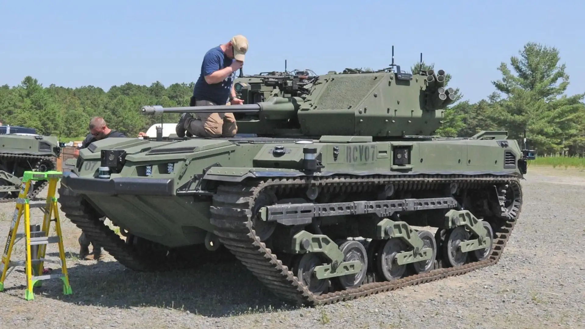
Textron Ripsaw M5 robotic combat vehicleA high-speed tracked robotic combat vehicle surrogate for the US Army Robotic Combat Vehicle effort, able to mount a 30 mm cannon and missiles.Human on the loop (or arguably out of the loop) in Auto-Special mode. Aegis in Auto-Special mode is the paradigm case of what philosophers call 'out of the loop' autonomy structured around pre-delegated authority.Image: U.S. Army photo, via Wikimedia Commonspublic domain
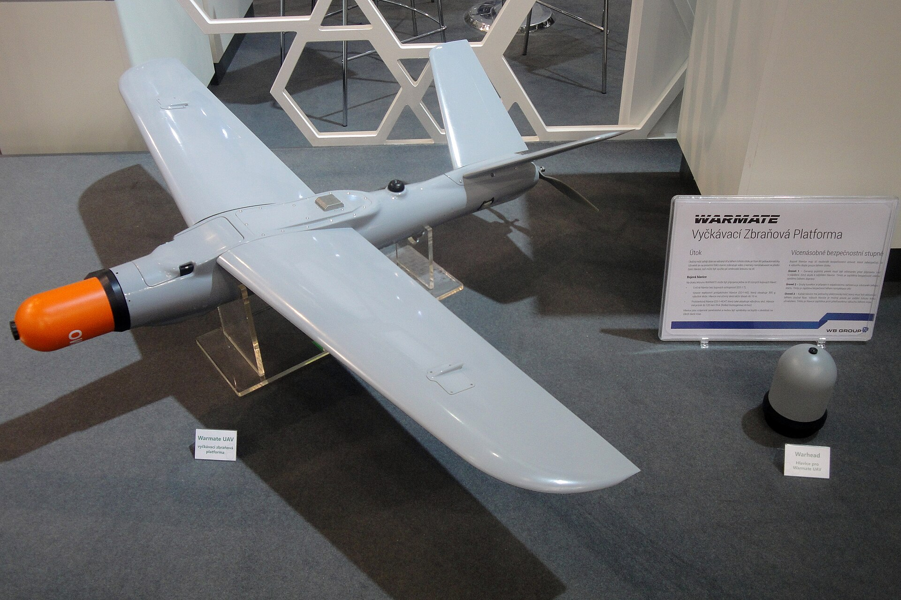
WB Group Warmate loitering munitionA man-portable loitering munition with swappable warheads, used for both reconnaissance and strike, with declared swarm capability.Spider: human in the loop. The Spider creates a sharp doctrinal fault line within a single system family.Image: Reise Reise, via Wikimedia Commonsacademic use
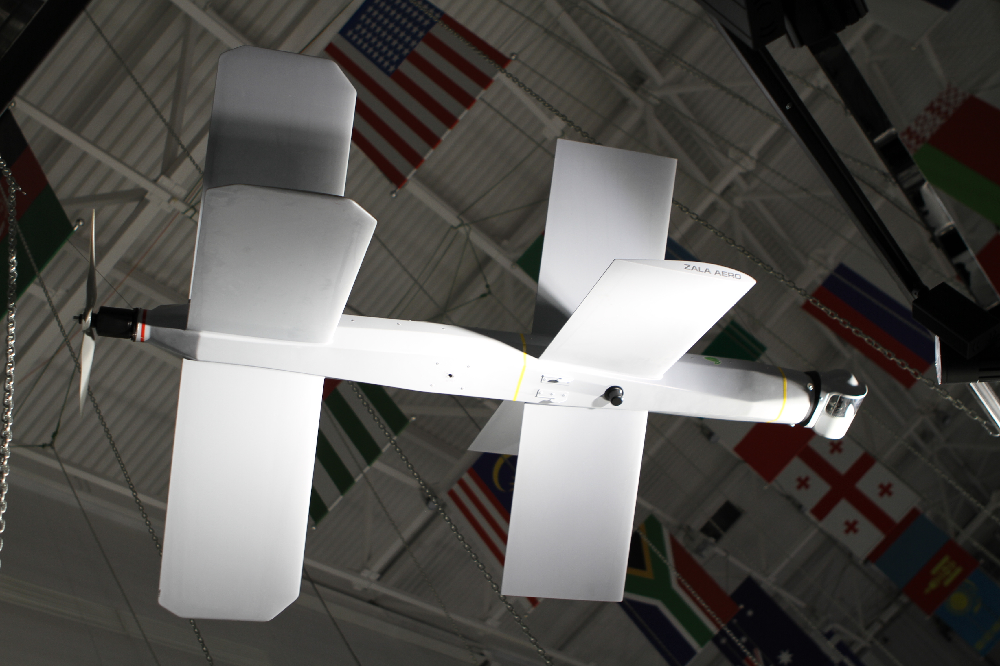
ZALA Lancet-3ZALA Lancet loitering munition on display at the Army-2020 military exhibition, August 2020; photograph taken with Canon EOS 7D.Human in the loop for target selection; the AI upgrade adds autonomous terminal tracking but not autonomous target selection. The Lancet illustrates the AI-assist boundary problem.Image: Nickel nitride, via Wikimedia Commons (CC0 public domain)public domain
2Defensive point-defense
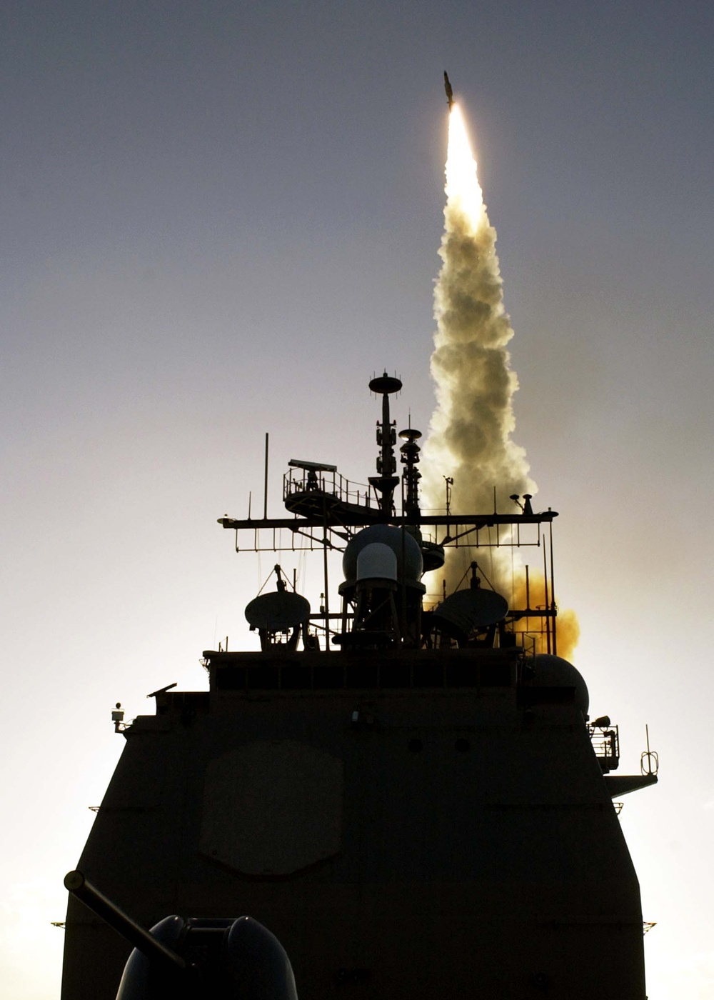
Aegis Combat SystemAn SM-3 interceptor missile launches from the Aegis cruiser USS Lake Erie (CG 70) during a Missile Defense Agency ballistic missile defense test, December 2003. This is the canonical public-domain image of the Aegis weapon system firing.Human on the loop (or arguably out of the loop) in Auto-Special mode. Aegis in Auto-Special mode is the paradigm case of what philosophers call 'out of the loop' autonomy structured around pre-delegated authority.Image: U.S. Navy photo (VIRIN 031212-D-D0439-5587), via Defense Visual Information Distribution Servicepublic domain
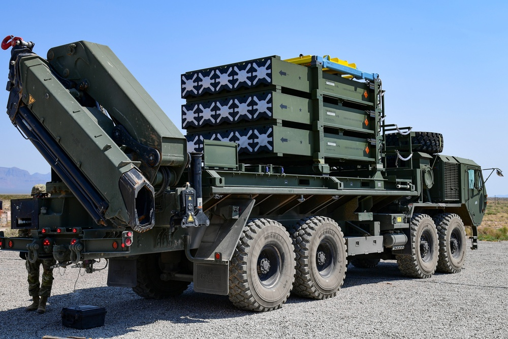
Iron Dome (Rafael)U.S. Army soldiers operate the Iron Dome Defense System-Army (IDDS-A) during a live-fire exercise at White Sands Missile Range, New Mexico, June 2021.Human on the loop with extremely compressed decision windows. Iron Dome is the central test case for whether speed-compressed human authorization is substantively different from no human authorization.Image: U.S. Army photo by Darrell Ames (VIRIN 210616-A-UG834-720), White Sands Missile Range, New Mexico, June 16, 2021public domain
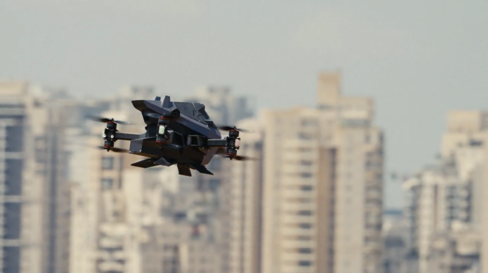
Iron Drone Raider (Airobotics / Ondas Holdings)The Iron Drone Raider counter-UAS system shown in its docking station, described as 'ready to deploy 24/7,' featuring the autonomous interceptor drone and its launch housing used to neutralize hostile small drones.Iron Drone Raider: human out of the loop for individual engagement decisions. Counter-drone systems are the hard case that reveals why the 'lethal or irreversible decision' test is underinclusive for the hardest legal question.Image: Ondas Holdings / Airobotics (supplied as sponsored content to Breaking Defense, March 13, 2025)academic use
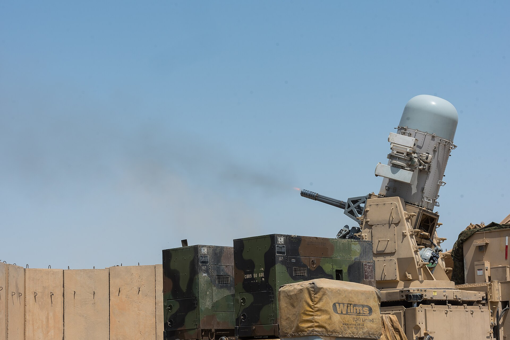
Land Phalanx / Centurion C-RAMA land-based Phalanx that automatically detects, tracks, and fires a 20 mm gun at incoming rockets, artillery, and mortar rounds.Human out of the loop in automatic mode; human on the loop with override capability. Phalanx is the clearest example of a system where the design intentionally removes the human from each firing decision because the threat timeline (incoming supersonic anti-ship missile at close range) is shorter than human reaction time.Image: U.S. Army photo by Master Sgt. Raymond Boyingtonpublic domain
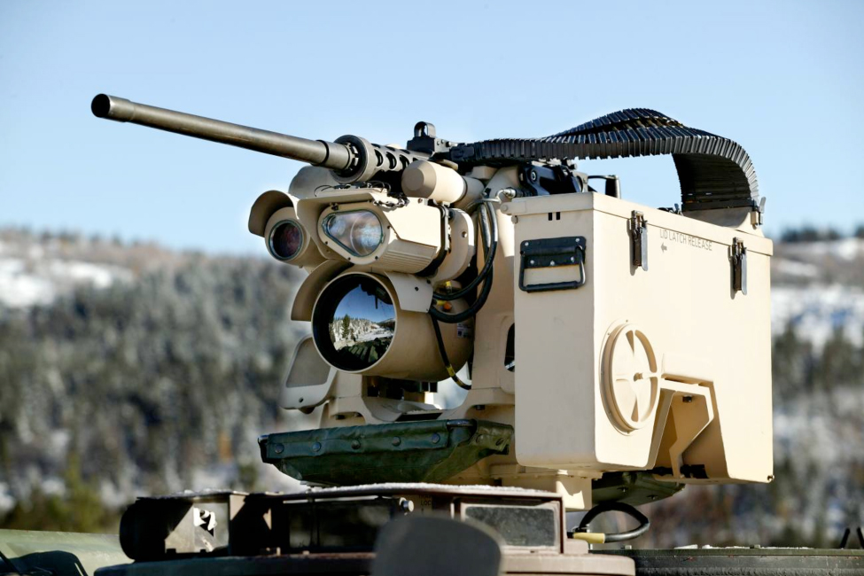
M153 CROWS remote weapon stationA vehicle-mounted remote weapon station that lets a crew member aim and fire a machine gun or grenade launcher from inside an armored vehicle.Disputed. Sentry Tech sits structurally between the SGR-A1 (which aims at individuals) and Phalanx (which intercepts missiles).Image: U.S. Army photopublic domain
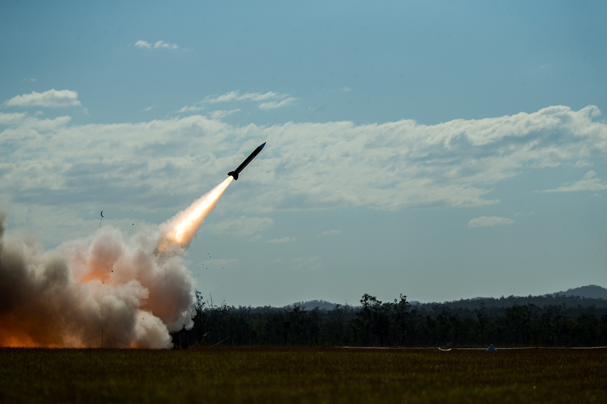
MIM-104 Patriot air-defense systemA long-range surface-to-air missile system that detects, tracks, and intercepts aircraft, cruise missiles, and ballistic missiles.Human on the loop (or arguably out of the loop) in Auto-Special mode. Aegis in Auto-Special mode is the paradigm case of what philosophers call 'out of the loop' autonomy structured around pre-delegated authority.Image: U.S. Marine Corps photo by Lance Cpl. Alyssa Chuludapublic domain
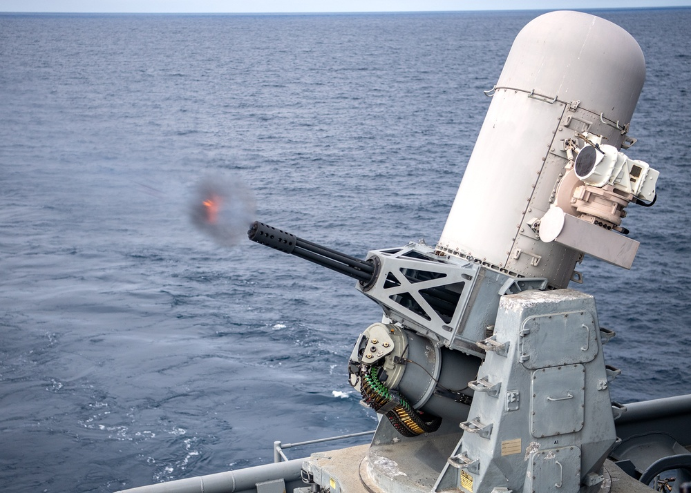
Phalanx CIWS (Mark 15)A Phalanx Close-In Weapon System (CIWS) aboard USS Essex (LHD 2) conducts a live fire exercise on the ship's fantail, Pacific Ocean, December 14, 2025.Human out of the loop in automatic mode; human on the loop with override capability. Phalanx is the clearest example of a system where the design intentionally removes the human from each firing decision because the threat timeline (incoming supersonic anti-ship missile at close range) is shorter than human reaction time.Image: U.S. Navy photo by Chief Mass Communication Specialist Brian P. Caracci (VIRIN 251214-N-GV721-1113)public domainSamsung SGR-A1 robotic sentry gun (turret and mount unit)The pan-and-tilt turret base of the Samsung SGR-A1 sentry gun, the platform that carries the camera array and the K-3 machine gun.Disputed. The SGR-A1 is the hardest case in the cluster for responsibility analysis precisely because the key factual predicate whether a human must authorize each shot or whether the machine can fire itself is genuinely contested between the manufacturer's PR statements and the manufacturer's own engineer's public statements.Image: Robotics Today (roboticstoday.com); device by Samsung Techwin (now Hanwha Aerospace)academic use
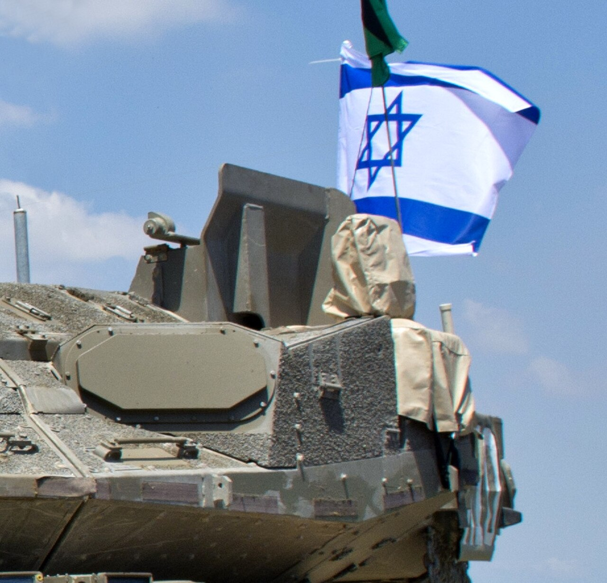
Trophy / Wind Breaker Active Protection System (Rafael / Leonardo DRS)Close-up of the Trophy APS (IDF designation: Wind Breaker) mounted on a Merkava Mk 4M main battle tank, displayed at Israel's 68th Independence Day Ground Army Exhibition at Yad LaShiryon, Latrun, May 11, 2016.Human out of the loop for individual intercepts. Trophy is the clearest pure-defensive autonomous weapons case in this cluster.Image: Photo by Zachi Evenor, via Wikimedia Commons (CC BY-SA 4.0)academic use
3Barriers, counter-systems & sensing
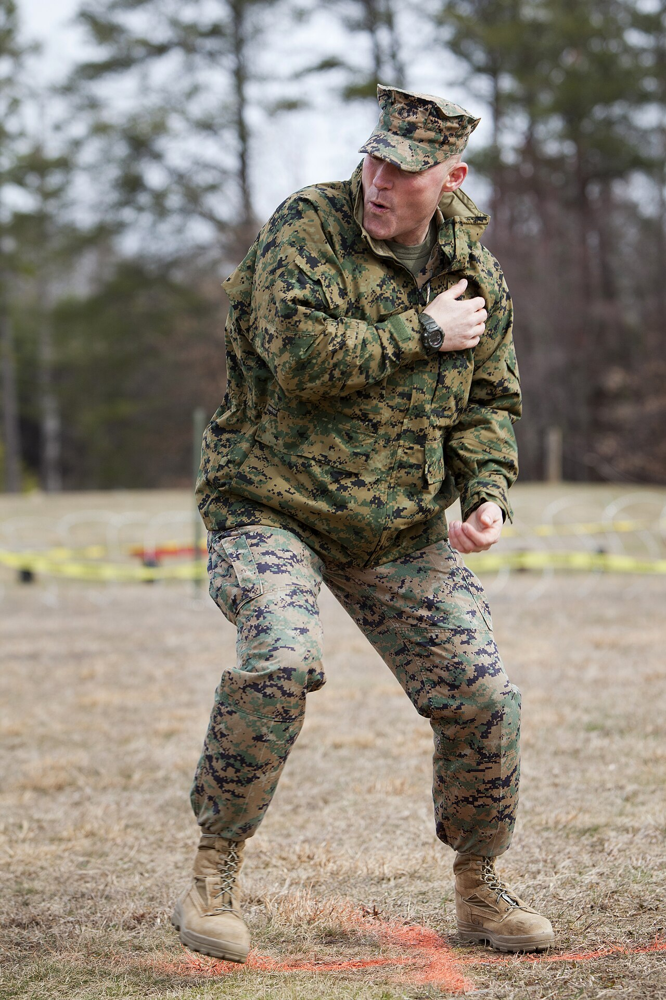
Active Denial System / Silent GuardianSgt. Maj. of the Marine Corps Micheal P. Barrett reacts to the Active Denial System's millimeter-wave heat beam during a demonstration at Marine Corps Base Quantico, Va., March 9, 2012.Human in the loop. The ADS is the purest test case for whether the rule should be about lethality or about discrimination.Image: Lance Cpl. Daniel Wetzel, U.S. Marine Corps / Wikimedia Commonspublic domain
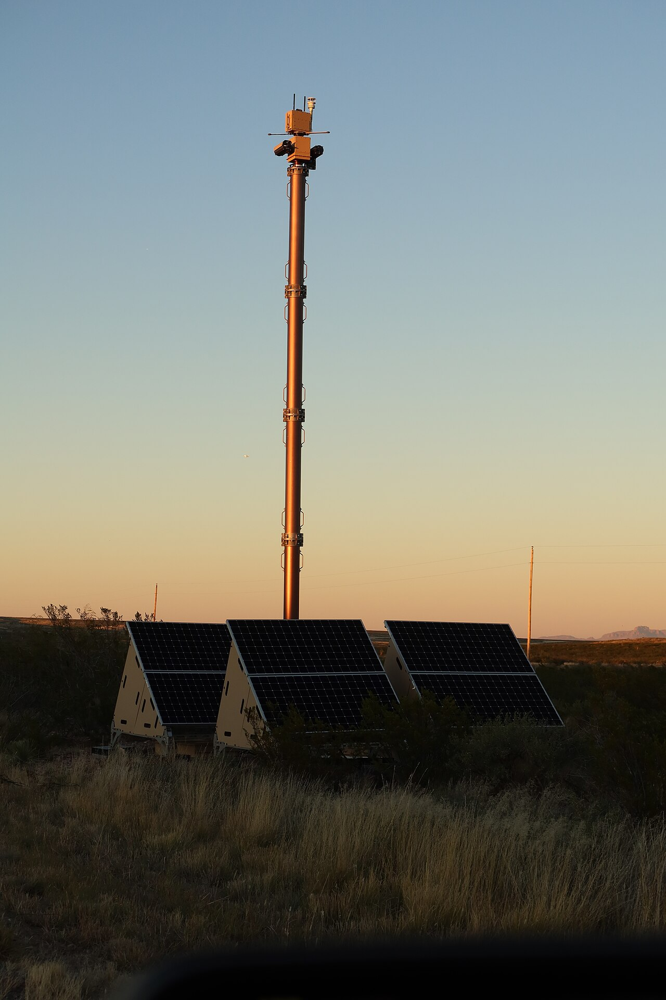
Anduril Autonomous Surveillance Tower (Sentry / Lattice)An Anduril Sentry autonomous surveillance tower in Luna County, New Mexico, lit by the setting sun, photographed October 26, 2022, near State Road 9 along the U.S.-Mexico border.On the loop for the surveillance-to-alert pipeline; human in the loop for enforcement response. Anduril's AST/XRST system is the clearest example in this cluster of a machine that discriminates but does not act.Image: Jasonateff (Electronic Frontier Foundation) / Wikimedia Commons, CC BY 3.0academic use
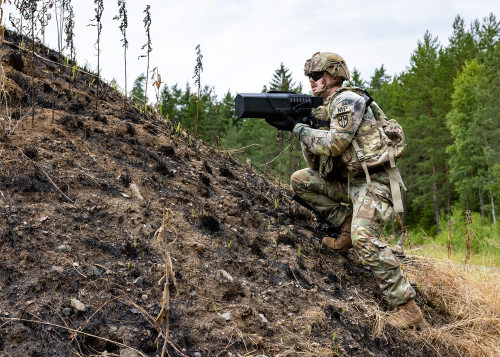
DroneShield DroneGun counter-drone jammerA handheld directional radio-frequency jammer that disrupts a drone's control and navigation links, forcing it to land or return home.Iron Drone Raider: human out of the loop for individual engagement decisions. Counter-drone systems are the hard case that reveals why the 'lethal or irreversible decision' test is underinclusive for the hardest legal question.Image: U.S. Army photo by Sgt. 1st Class Tanisha Karnpublic domain
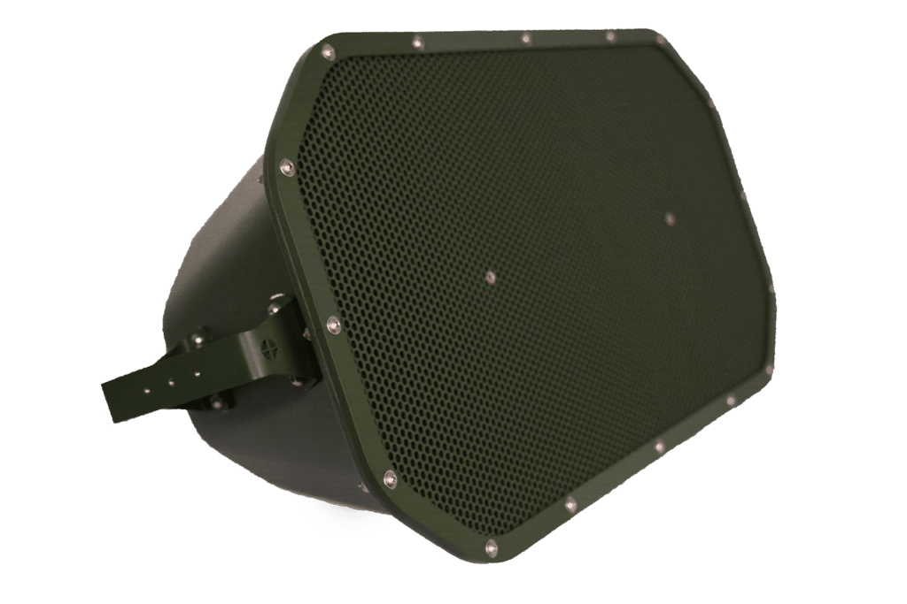
LRAD Long-Range Acoustic DeviceOfficial product photograph of the LRAD 450XL-RT long-range acoustic device, a mid-range model in the Genasys commercial lineup, shown in side profile.Human in the loop in all described operational uses. LRAD sits at the non-lethal, fully human-controlled end of the area-denial spectrum, and it is most interesting as a comparison case for the others.Image: Genasys Inc. — official product imageacademic use
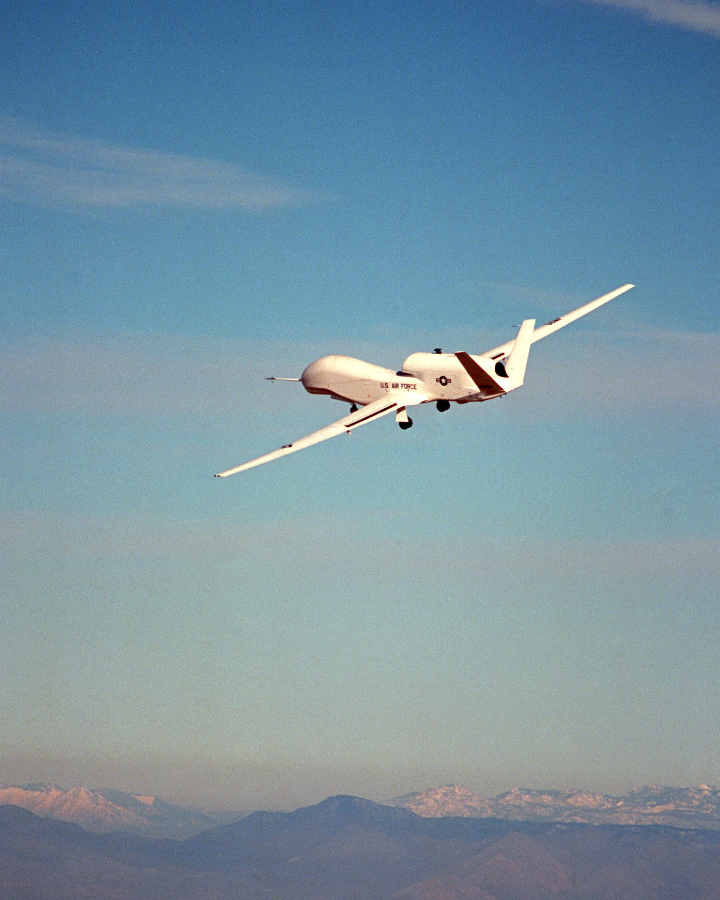
RQ-4 Global Hawk reconnaissance droneA high-altitude long-endurance unmanned reconnaissance aircraft that flies preprogrammed surveillance missions above 60,000 ft.Iron Drone Raider: human out of the loop for individual engagement decisions. Counter-drone systems are the hard case that reveals why the 'lethal or irreversible decision' test is underinclusive for the hardest legal question.Image: U.S. Air Force / Department of Defense photopublic domain
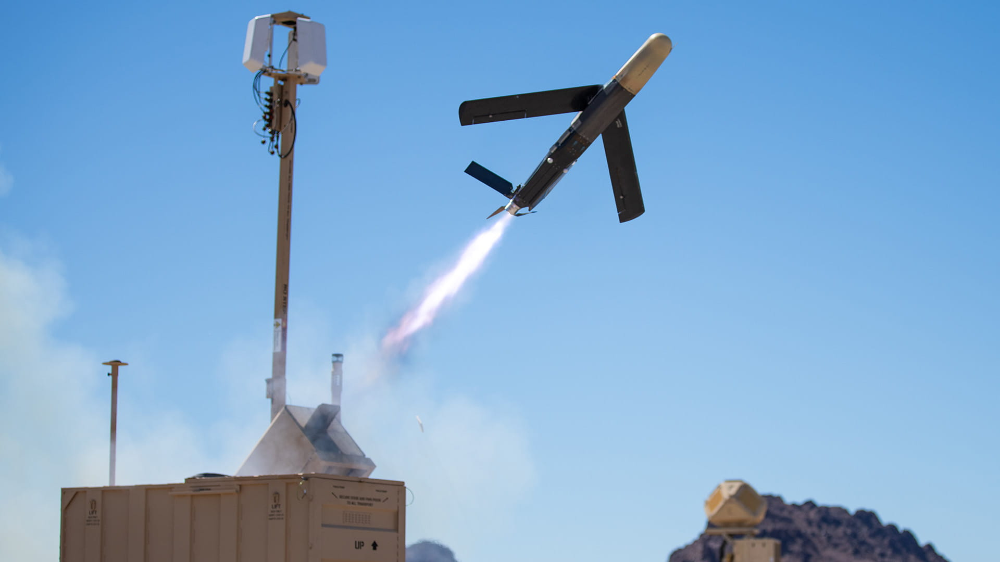
Raytheon Coyote Counter-UAS InterceptorRaytheon Coyote counter-UAS munition at moment of launch from its tube-based dispenser, showing the folding-wing configuration used for intercept missions against drone swarms.AUDS: human on the loop for classification and inhibitor activation. The Coyote-versus-AUDS pairing illuminates the lethal/non-lethal distinction within the same functional category (counter-drone).Image: RTX / Raytheon — official product imageacademic use
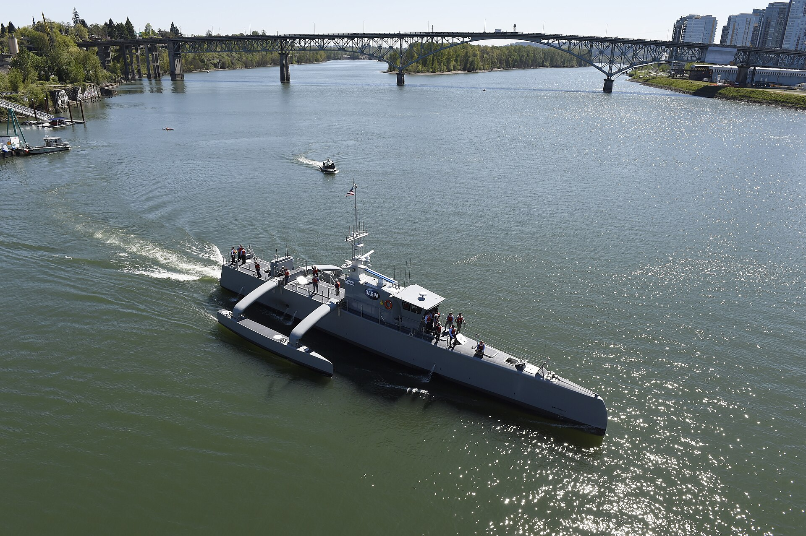
Sea Hunter autonomous unmanned surface vesselA medium-displacement autonomous trimaran built to trail diesel-electric submarines and run other missions with no crew aboard.On the loop for the surveillance-to-alert pipeline; human in the loop for enforcement response. Anduril's AST/XRST system is the clearest example in this cluster of a machine that discriminates but does not act.Image: U.S. Navy photo by John F. Williamspublic domain
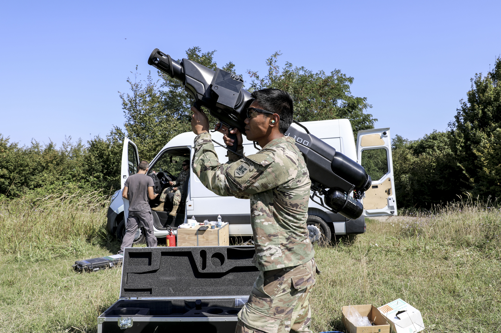
SkyWall 100 Net-Capture Counter-Drone SystemSkyWall 100 handheld net-capture counter-drone system held by an operator during a technology demonstration in Longare, Italy, September 15, 2020.SkyWall Patrol: human in the loop; the operator aims and fires. SkyWall and Anvil bracket the non-lethal/lethal distinction within the capture-and-intercept category.Image: U.S. Army Southern European Task Force, Africa / Wikimedia Commons, CC BY 2.0academic use
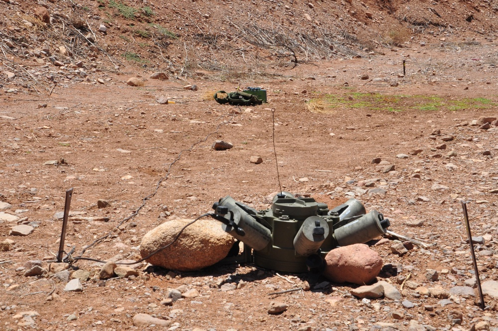
XM7 Spider Networked MunitionXM-7 Spider Networked Munition with attached claymores emplaced at White Sands Missile Range, N.M., June 14, 2011, during testing by 2nd Brigade Combat Team, 1st Armored Division.Spider: human in the loop. The Spider creates a sharp doctrinal fault line within a single system family.Image: Spc. Sinthia Rosario, 24th Theater Public Affairs Support Element / U.S. Army / DVIDSpublic domain
Life-savingbattlefield medicine: built to keep a casualty alive
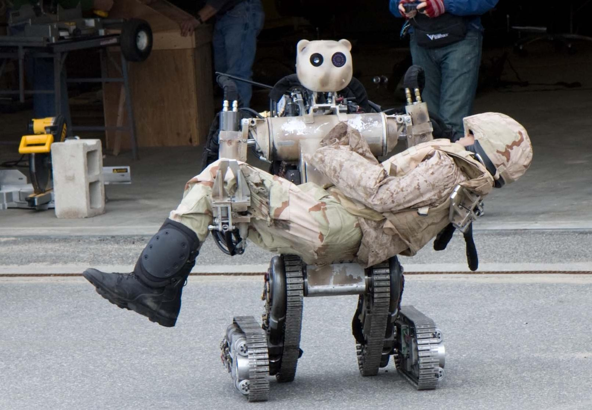
BEAR (Battlefield Extraction-Assist Robot)A remotely operated hydraulic robot built to lift and carry a wounded soldier (up to 500 lb) off the battlefield to safety. A warfighter controls it through a motion-capture glove or rifle-grip remote, and the robot executes the movement on command.Human on the loop at plan selection; machine autonomous during execution. STAR is the test case for whether surgical autonomy is categorically different from radiological autonomy.Image: U.S. Armyacademic use
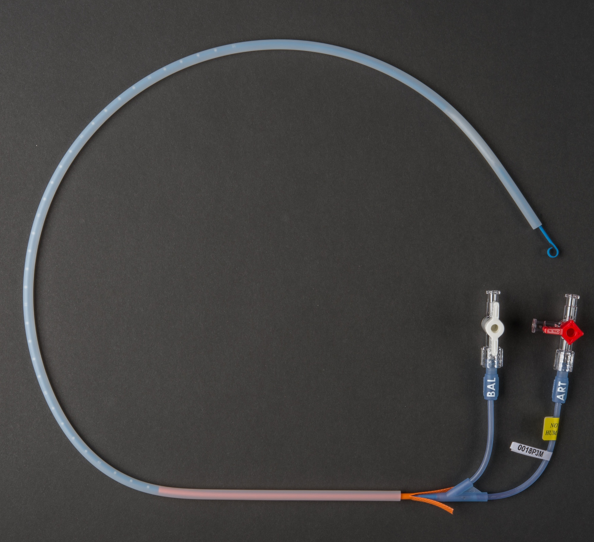
ER-REBOA aortic occlusion catheterA balloon-tipped catheter advanced into the aorta and inflated to slow non-compressible truncal bleeding and buy time for surgery.Image: Photo by Matthew Breitbart, National Museum of Health and Medicine (DoD)public domain
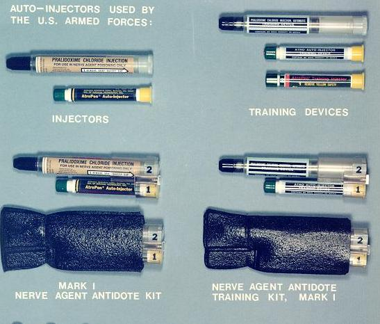
Mark I NAAK nerve-agent antidote auto-injectorA nerve-agent antidote kit a soldier self- or buddy-administers by pressing it against the thigh, injecting atropine and pralidoxime. The Mark I uses two injectors; its successor, the ATNAA, combines both drugs in one. The actuation is fully manual, with no automation beyond the spring-loaded needle.Human out of the loop in automatic mode; human on the loop with override capability. Phalanx is the clearest example of a system where the design intentionally removes the human from each firing decision because the threat timeline (incoming supersonic anti-ship missile at close range) is shorter than human reaction time.Image: U.S. Army / USAMMDA, via Wikimedia Commonsacademic use
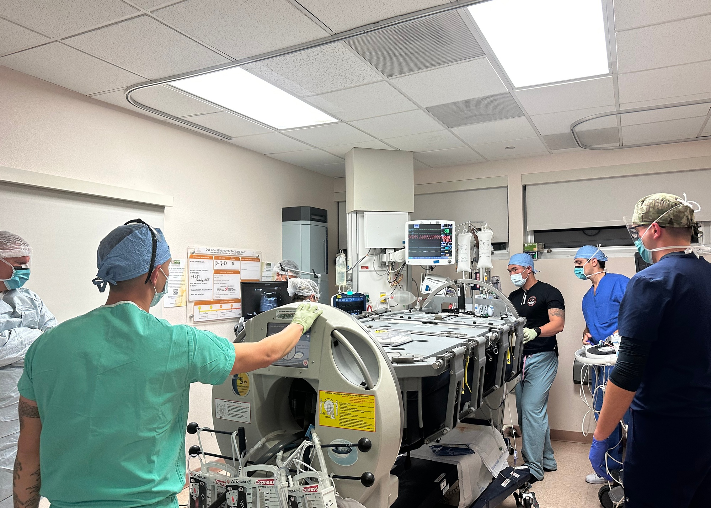
Military mobile ECMO transport (extracorporeal life support)A DoD mobile extracorporeal membrane oxygenation team that puts patients in severe heart or lung failure on machine life support and flies them to definitive care.Disputed. Gospel and Lavender sit at the hardest point on the spectrum for the responsibility question, and the dispute about what actually happened is itself legally significant.Image: U.S. Air Force photo, 94th Airlift Wingpublic domain
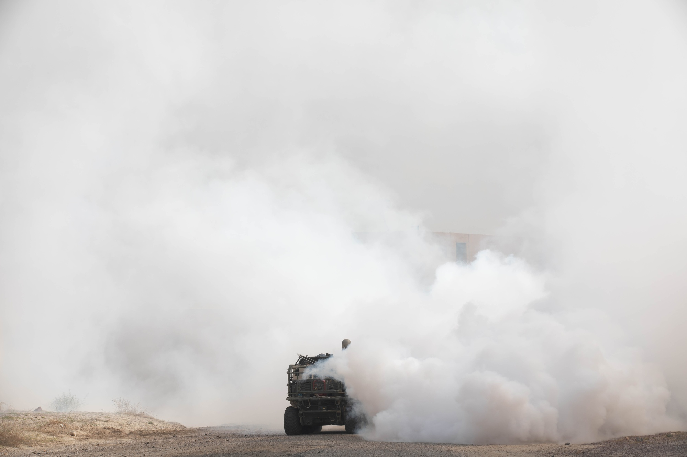
S-MET (Squad Multipurpose Equipment Transport)An eight-wheeled hybrid-electric robotic mule that carries squad gear and casualties, generates power for electronics, and crosses rough terrain under a soldier's remote control. Payload 1,000 to 2,500 lb; range about 60 miles over three days.Image: U.S. Army photo by Spc. Howard Lee (DVIDS, VIRIN 240311-A-VQ625-1005)academic use
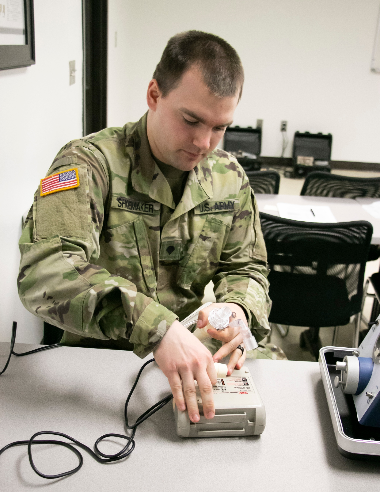
SAVe portable field ventilator (Simplified Automated Ventilator)A 2.8 lb portable ventilator for battlefield and transport use. A medic sets the patient's height on a single dial and the device calculates and delivers the tidal volume automatically, while the medic initiates treatment and monitors. FDA-cleared for prehospital, aeromedical, and field-hospital use.In the fully automatic variant: human out of the loop at the moment of shock. The fully automatic AED is the cleanest example of human out of the loop for an irreversible curative decision.Image: U.S. Army National Guard photo by Sgt. Tawny Kruse (DVIDS, VIRIN 200506-Z-KS612-002)academic use
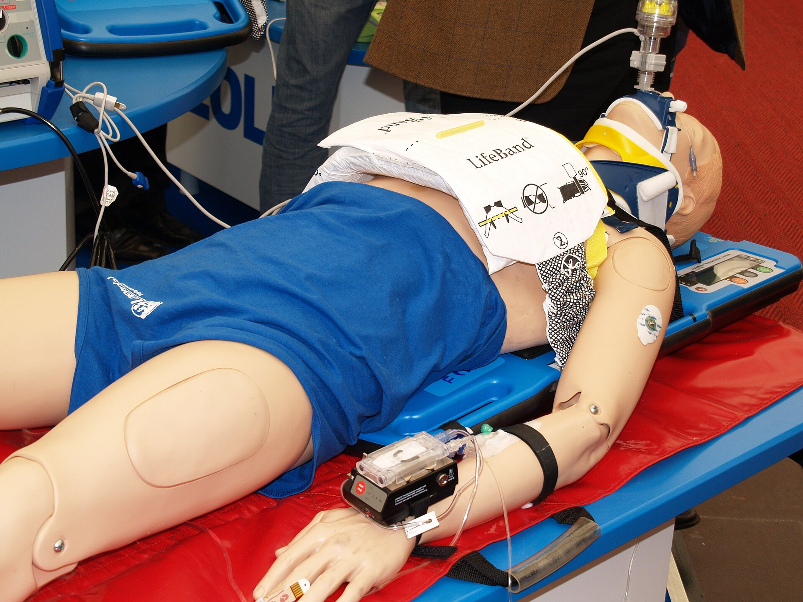
ZOLL AutoPulse mechanical CPR systemA battery-powered load-distributing band that wraps the chest and delivers automated chest compressions during cardiac arrest, including in transport.Human on the loop (or arguably out of the loop) in Auto-Special mode. Aegis in Auto-Special mode is the paradigm case of what philosophers call 'out of the loop' autonomy structured around pre-delegated authority.Image: PhilippN, via Wikimedia Commonsacademic use
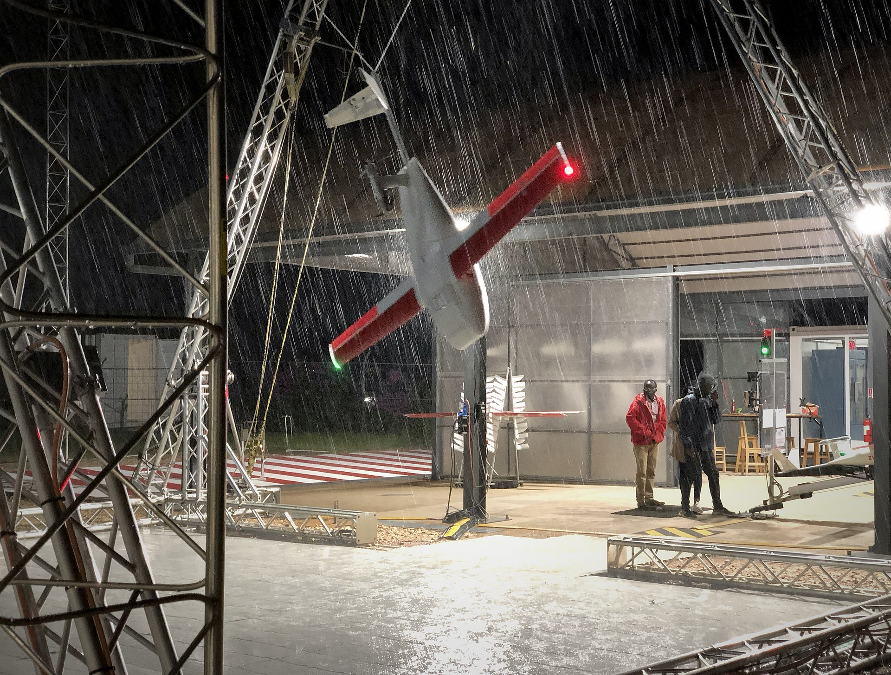
Zipline autonomous medical-delivery droneA fixed-wing autonomous drone that delivers blood, vaccines, and medicines by parachute to remote clinics. Human dispatchers approve each order; the drone flies the route, drops the package, and returns on its own. Up to 1.75 kg payload, about 100 km/h, 160 km round trip.Iron Drone Raider: human out of the loop for individual engagement decisions. Counter-drone systems are the hard case that reveals why the 'lethal or irreversible decision' test is underinclusive for the hardest legal question.Image: Roksenhorn, via Wikimedia Commonsacademic use